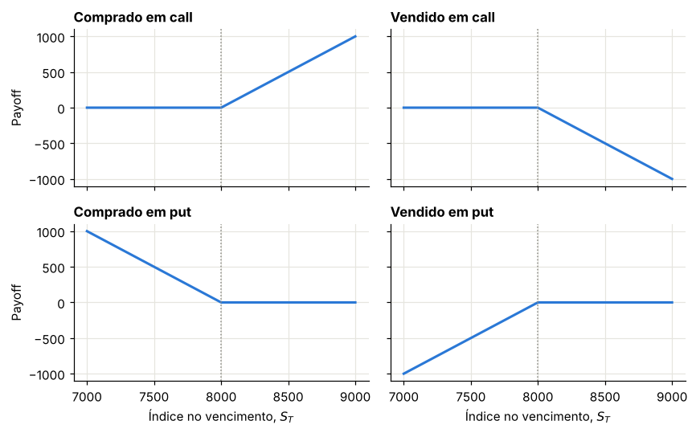
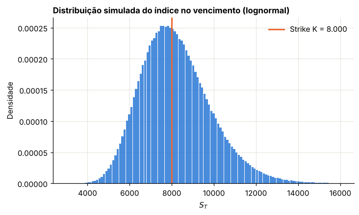
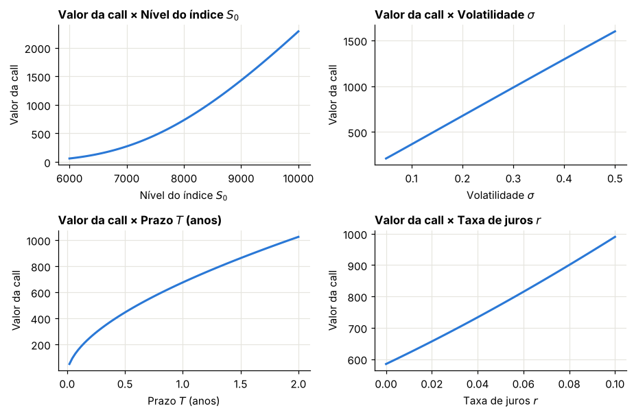
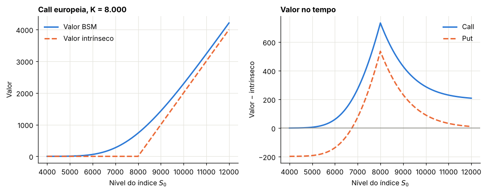
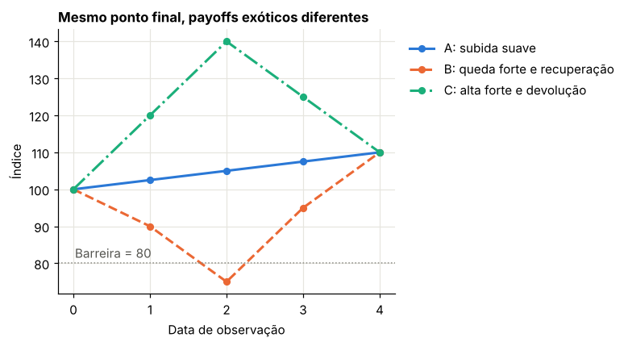
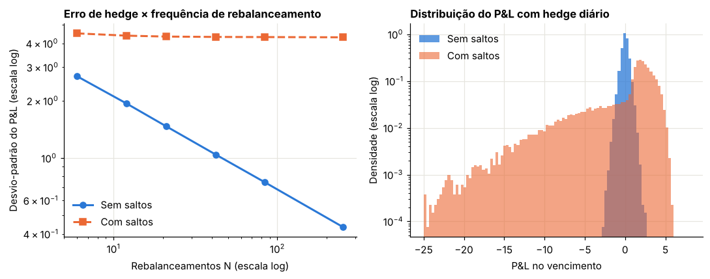
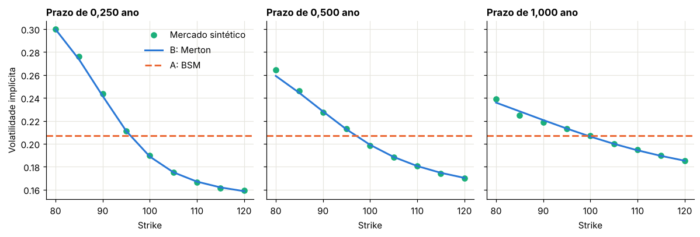

Módulo 1 — O que é avaliação baseada em mercado#
Curso: Derivativos com Python, a partir de Derivatives Analytics with Python (Y. Hilpisch, Wiley, 2015). Este módulo cobre: capítulos 1 e 2 do livro.
O que você vai conseguir fazer ao final#
Escrever o payoff de calls e puts, e dizer quem paga o quê a quem.
Explicar por que o valor de uma opção não é a média simples do que ela pode pagar.
Calcular o valor de uma opção europeia por simulação e pela fórmula de Black-Scholes-Merton (BSM), e conferir uma contra a outra.
Separar valor intrínseco de valor no tempo e saber quando este último pode ser negativo.
Listar os riscos que movem o preço de uma opção e medir o efeito de cada um.
Mostrar, com números, por que o hedge dinâmico funciona num mundo sem saltos e falha num mundo com saltos.
Executar, em miniatura, as seis etapas do processo que o resto do curso aprofunda.
Como estudar este notebook#
Leia cada bloco de teoria antes de rodar a célula seguinte, e tente prever o resultado. Cada laboratório termina com verificações (ok(...)): se o notebook roda até o fim, todas as contas foram conferidas.
Neste módulo algumas ferramentas aparecem como caixa-preta (a fórmula BSM, a dinâmica lognormal). Isso é proposital: primeiro vemos o que elas fazem, depois as deduzimos do zero nos módulos 3 a 5.
Mapa do curso#
Módulo |
Tema |
Livro |
|---|---|---|
1 |
Avaliação baseada em mercado |
Caps. 1-2 |
2 |
Fatos estilizados e volatilidade implícita |
Cap. 3 |
3 |
Neutralidade ao risco em tempo discreto |
Cap. 4 |
4 |
Tempo contínuo: Browniano, Itô, Girsanov |
Cap. 4 |
5 |
BSM: a EDP, a fórmula e as gregas |
Cap. 5 |
6 |
Árvore binomial CRR e convergência |
Cap. 5 |
7 |
Fourier I: transformada e método de Lewis |
Cap. 6 |
8 |
Fourier II: Carr-Madan, FFT e convolução |
Cap. 6 |
9 |
Opções americanas: Least-Squares Monte Carlo e dual |
Cap. 7 |
10 |
Primeiro exemplo completo: Merton (1976) |
Cap. 8 |
11 |
Modelo geral BCC97: Heston + saltos + CIR |
Cap. 9 |
12 |
Monte Carlo: discretização e redução de variância |
Cap. 10 |
13 |
Calibração I: curva de juros (CIR) e Heston |
Cap. 11 |
14 |
Calibração II: saltos e BCC97 completo |
Cap. 11 |
15 |
Simulação e avaliação no modelo geral |
Cap. 12 |
16 |
Hedge dinâmico e síntese |
Caps. 13-14 |
17 |
Complemento: Hull-White I — medidas, modelo e fórmulas fechadas |
— |
18 |
Complemento: Hull-White II — árvore trinomial |
— |
As ferramentas do Apêndice A do livro (regressão, splines, otimização, integração) entram no módulo em que são usadas pela primeira vez.
0. Preparação#
A célula abaixo importa as bibliotecas e define três utilitários: f3 (número com três casas decimais e vírgula), tabela (mostra um DataFrame nesse formato) e ok (verificação com contagem).
import numpy as np
import pandas as pd
import matplotlib.pyplot as plt
from scipy.stats import norm, poisson
from scipy.optimize import brentq, least_squares
from IPython.display import display
AZUL, LARANJA, VERDE, CINZA = "#2a78d6", "#eb6834", "#1baf7a", "#8a8a84"
plt.rcParams.update({
"figure.figsize": (7.2, 4.0), "figure.dpi": 110,
"axes.spines.top": False, "axes.spines.right": False,
"axes.grid": True, "grid.color": "#e6e5df", "grid.linewidth": 0.8,
"axes.axisbelow": True, "axes.titlesize": 11, "axes.titleweight": "bold",
"axes.titlelocation": "left", "lines.linewidth": 2.0, "legend.frameon": False,
"font.size": 10,
})
def f3(x):
"""Formata com três casas decimais no padrão brasileiro."""
return f"{x:,.3f}".replace(",", "§").replace(".", ",").replace("§", ".")
def tabela(df):
"""Exibe um DataFrame com os números reais em três casas decimais."""
display(df.map(lambda v: f3(v) if isinstance(v, (float, np.floating)) else v))
_checks = {"n": 0}
def ok(condicao, mensagem):
"""Verificação do laboratório: interrompe o notebook se a conta não fechar."""
assert bool(condicao), f"FALHOU: {mensagem}"
_checks["n"] += 1
print(f"OK — {mensagem}")
print("Ambiente pronto. Exemplo de formato:", f3(1234.5678))
Ambiente pronto. Exemplo de formato: 1.234,568
1. O contrato: o que é uma opção#
Livro: §2.1
Uma opção é um contrato que dá a quem compra um direito, sem obrigação:
a call dá o direito de comprar o ativo-objeto por um preço combinado;
a put dá o direito de vender o ativo-objeto por um preço combinado.
Quatro palavras aparecem o tempo todo:
Termo |
Significado |
|---|---|
Strike (\(K\)) |
o preço combinado |
Vencimento (\(T\)) |
a data em que o direito acaba |
Titular (holder) |
quem comprou o direito e pagou o prêmio |
Lançador (writer) |
quem vendeu o direito e assumiu a obrigação |
Quanto ao momento de exercício: a europeia só pode ser exercida no vencimento; a americana, a qualquer momento até o vencimento.
Opções sobre índice são liquidadas financeiramente: ninguém entrega “um índice”. O lançador apenas paga a diferença em dinheiro.
Passo a passo do payoff#
Considere uma call europeia sobre um índice, com \(K = 8.000\).
Cenário 1: o índice fecha em 8.200. O titular tem o direito de “comprar” a 8.000 algo que vale 8.200. Ele exerce e recebe a diferença: \(8.200 - 8.000 = 200\).
Cenário 2: o índice fecha em 7.800. Comprar a 8.000 algo que vale 7.800 seria perder 200. Como é um direito e não uma obrigação, ele não exerce e recebe zero.
Os dois cenários cabem numa única expressão, o payoff (ou valor intrínseco no vencimento):
Para a put, o raciocínio é espelhado:
Repare em duas propriedades que vão importar muito:
O payoff nunca é negativo para o titular. É por isso que ele paga um prêmio para entrar no contrato.
O payoff tem uma quina em \(S_T = K\). Ele é uma função convexa, e veremos que essa convexidade é a origem do valor da volatilidade.
def payoff_call(S, K):
return np.maximum(S - K, 0.0)
def payoff_put(S, K):
return np.maximum(K - S, 0.0)
K = 8000.0
ok(payoff_call(8200.0, K) == 200.0, "call com índice em 8.200 paga 200")
ok(payoff_call(7800.0, K) == 0.0, "call com índice em 7.800 paga zero")
ok(payoff_put(7800.0, K) == 200.0, "put com índice em 7.800 paga 200")
OK — call com índice em 8.200 paga 200
OK — call com índice em 7.800 paga zero
OK — put com índice em 7.800 paga 200
Laboratório 1.1 — As quatro posições básicas#
Uma opção é um jogo de soma zero entre as duas pontas: o que o titular recebe, o lançador paga. Comprar e vender calls e puts gera quatro perfis. Antes de rodar, tente desenhar os quatro de cabeça.
Os gráficos mostram só o payoff no vencimento, sem considerar o prêmio pago ou recebido.
S = np.linspace(7000, 9000, 401)
perfis = {
"Comprado em call": payoff_call(S, K),
"Vendido em call": -payoff_call(S, K),
"Comprado em put": payoff_put(S, K),
"Vendido em put": -payoff_put(S, K),
}
fig, eixos = plt.subplots(2, 2, figsize=(8, 5), sharex=True, sharey=True)
for ax, (nome, h) in zip(eixos.ravel(), perfis.items()):
ax.plot(S, h, color=AZUL)
ax.axvline(K, color=CINZA, lw=1, ls=":")
ax.set_title(nome)
for ax in eixos[1]:
ax.set_xlabel("Índice no vencimento, $S_T$")
for ax in eixos[:, 0]:
ax.set_ylabel("Payoff")
plt.tight_layout()
plt.show()
ok(np.allclose(perfis["Comprado em call"] + perfis["Vendido em call"], 0), "soma zero entre titular e lançador da call")
ok(np.allclose(perfis["Comprado em put"] + perfis["Vendido em put"], 0), "soma zero entre titular e lançador da put")

OK — soma zero entre titular e lançador da call
OK — soma zero entre titular e lançador da put
Moneyness: onde a opção está em relação ao strike#
Situação |
Call |
Put |
|---|---|---|
Dentro do dinheiro (ITM) |
\(S > K\) |
\(S < K\) |
No dinheiro (ATM) |
\(S \approx K\) |
\(S \approx K\) |
Fora do dinheiro (OTM) |
\(S < K\) |
\(S > K\) |
Laboratório 1.2 — Uma identidade que vale em qualquer cenário#
Compre uma call e venda uma put com o mesmo strike. O payoff combinado é
Vamos analisar os dois casos possíveis:
Se \(S_T \ge K\): a call paga \(S_T - K\), a put paga zero. Total: \(S_T - K\).
Se \(S_T < K\): a call paga zero, a put paga \(K - S_T\), e como estamos vendidos nela o total é \(-(K - S_T) = S_T - K\).
Nos dois casos o resultado é exatamente \(S_T - K\), ou seja, o mesmo de um contrato a termo. A quina desaparece. Essa identidade dá origem à paridade put-call, que usaremos na Seção 6.
sinteticos = payoff_call(S, K) - payoff_put(S, K)
ok(np.allclose(sinteticos, S - K), "call comprada + put vendida = S_T − K em todos os cenários")
OK — call comprada + put vendida = S_T − K em todos os cenários
2. Por que o valor não é a média do payoff#
Livro: §2.1 (pergunta) e cap. 4 (resposta completa)
A primeira ideia de quase todo mundo é: “o valor da opção é a média do que ela pode pagar, trazida a valor presente.” Vamos testar essa ideia no menor mundo possível.
Um mundo com dois cenários#
Hoje o índice vale \(S_0 = 100\). Daqui a um período ele vale \(S_u = 120\) ou \(S_d = 80\). A taxa de juros é zero, para simplificar. Temos uma call com \(K = 100\):
Cenário |
Índice |
Payoff da call |
|---|---|---|
Alta |
120 |
20 |
Baixa |
80 |
0 |
Se a probabilidade de alta for \(p\), a média do payoff é \(20p\). Quanto vale então a call? Com \(p = 50\%\) daria 10; com \(p = 90\%\) daria 18. Parece razoável.
Mas existe outro caminho: copiar a opção usando ativos que já têm preço.
Passo 1: montar uma carteira que paga o mesmo#
Compramos \(\Delta\) unidades do índice e colocamos \(B\) na renda fixa (\(B\) negativo significa pegar emprestado). Queremos que a carteira pague o mesmo que a call nos dois cenários:
Passo 2: resolver o sistema#
Subtraindo a segunda equação da primeira, \(B\) some:
Substituindo na segunda equação: \(80 \times 0{,}5 + B = 0\), logo \(B = -40\).
Passo 3: ver quanto custa essa carteira hoje#
Passo 4: a conclusão#
A carteira paga exatamente o mesmo que a call em todos os cenários e custa 10. Logo, a call tem que valer 10. Se valesse outra coisa, haveria lucro sem risco.
Note o que não usamos: a probabilidade \(p\). O valor não depende dela.
E o que é a probabilidade neutra ao risco?#
Existe um número \(q\) que faz a média ponderada reproduzir o preço correto. Basta exigir que o índice, em média, renda a taxa livre de risco:
Aqui, \(q = (100 - 80)/40 = 0{,}5\). Com ele, \(V_0 = [q \times 20 + (1-q) \times 0]/(1+r) = 10\).
\(q\) não é uma crença sobre o futuro. É um peso contábil que resume o custo de replicação. O módulo 3 transforma essa ideia em teorema.
def replicar(S0, Su, Sd, K, r):
"""Replica uma call num mundo de dois cenários e devolve a carteira e o valor."""
Cu, Cd = max(Su - K, 0.0), max(Sd - K, 0.0)
delta = (Cu - Cd) / (Su - Sd)
B = (Cd - delta * Sd) / (1 + r)
valor = delta * S0 + B
q = ((1 + r) * S0 - Sd) / (Su - Sd)
return {"delta": delta, "B": B, "valor": valor, "q": q, "Cu": Cu, "Cd": Cd}
m = replicar(100.0, 120.0, 80.0, 100.0, 0.0)
linhas = []
for p in [0.10, 0.50, 0.90]:
linhas.append({
"Prob. de alta p": p,
"Média simples do payoff": p * m["Cu"] + (1 - p) * m["Cd"],
"Custo de replicação": m["valor"],
})
tabela(pd.DataFrame(linhas))
print("Delta:", f3(m["delta"]), "| B:", f3(m["B"]), "| q:", f3(m["q"]))
ok(abs(m["valor"] - 10) < 1e-12, "custo de replicação = 10")
ok(abs((m["q"] * m["Cu"] + (1 - m["q"]) * m["Cd"]) - m["valor"]) < 1e-12, "média sob q reproduz o custo de replicação")
| Prob. de alta p | Média simples do payoff | Custo de replicação | |
|---|---|---|---|
| 0 | 0,100 | 2,000 | 10,000 |
| 1 | 0,500 | 10,000 | 10,000 |
| 2 | 0,900 | 18,000 | 10,000 |
Delta: 0,500 | B: -40,000 | q: 0,500
OK — custo de replicação = 10
OK — média sob q reproduz o custo de replicação
Laboratório 2.1 — Executando a arbitragem#
Suponha que alguém, acreditando em \(p = 90\%\), aceite pagar 18 pela call. Vendemos a call a 18 e compramos a carteira replicante por 10. O caixa hoje é \(+8\). No vencimento, a carteira paga exatamente o que devemos. Vamos conferir nos dois cenários.
preco_venda = 18.0
caixa_hoje = preco_venda - m["valor"]
linhas = []
for nome, St, c in [("Alta", 120.0, m["Cu"]), ("Baixa", 80.0, m["Cd"])]:
carteira = m["delta"] * St + m["B"]
linhas.append({"Cenário": nome, "Carteira recebe": carteira, "Call obriga a pagar": c, "Saldo no vencimento": carteira - c})
df = pd.DataFrame(linhas)
tabela(df)
print("Caixa embolsado hoje:", f3(caixa_hoje))
ok(caixa_hoje > 0 and np.allclose(df["Saldo no vencimento"], 0), "lucro hoje e saldo zero em qualquer cenário: arbitragem")
| Cenário | Carteira recebe | Call obriga a pagar | Saldo no vencimento | |
|---|---|---|---|---|
| 0 | Alta | 20,000 | 20,000 | 0,000 |
| 1 | Baixa | 0,000 | 0,000 | 0,000 |
Caixa embolsado hoje: 8,000
OK — lucro hoje e saldo zero em qualquer cenário: arbitragem
3. O valor hoje de uma opção europeia#
Livro: §2.1 e fórmula (5.7) do cap. 5
Passamos agora de dois cenários para infinitos. A receita continua a mesma: média sob a medida neutra ao risco, descontada pela taxa livre de risco,
Precisamos saber como \(S_T\) se distribui. O modelo de referência (benchmark) é o lognormal.
Passo 1: a hipótese#
Supomos que o log-retorno até \(T\) é normal:
Passo 2: de onde vem aquele \(-\tfrac12\sigma^2\)?#
Sob \(Q\), o índice precisa render \(r\) em média, ou seja, \(\mathbb{E}^Q[S_T] = S_0 e^{rT}\). Ingenuamente, escreveríamos \(S_T = S_0 e^{rT + \sigma\sqrt{T}Z}\). Mas a exponencial é convexa, e a média da exponencial é maior que a exponencial da média. Vamos calcular exatamente quanto, para \(a\) constante:
Juntando os expoentes e completando o quadrado, \(az - \tfrac12 z^2 = -\tfrac12(z-a)^2 + \tfrac12 a^2\):
Com \(a = \sigma\sqrt{T}\), obtemos \(\mathbb{E}[e^{\sigma\sqrt T Z}] = e^{\sigma^2 T/2}\). Esse fator extra precisa ser cancelado, e é isso que o termo \(-\tfrac12\sigma^2 T\) faz:
Laboratório 3.1 — Conferindo a média por simulação#
rng = np.random.default_rng(20150211)
def simular_ST(S0, r, sigma, T, n, rng):
Z = rng.standard_normal(n)
return S0 * np.exp((r - 0.5 * sigma**2) * T + sigma * np.sqrt(T) * Z)
S0, K, T, r, sigma = 8000.0, 8000.0, 1.0, 0.025, 0.20
ST = simular_ST(S0, r, sigma, T, 1_000_000, rng)
teorico = S0 * np.exp(r * T)
sem_ajuste = S0 * np.exp(r * T + 0.5 * sigma**2 * T)
erro_padrao = ST.std(ddof=1) / np.sqrt(ST.size)
tabela(pd.DataFrame([
{"Quantidade": "Média simulada de S_T", "Valor": ST.mean()},
{"Quantidade": "Teoria: S0·exp(rT)", "Valor": teorico},
{"Quantidade": "O que daria sem o termo −σ²/2", "Valor": sem_ajuste},
{"Quantidade": "Erro-padrão da simulação", "Valor": erro_padrao},
]))
ok(abs(ST.mean() - teorico) < 4 * erro_padrao, "média simulada compatível com S0·exp(rT)")
fig, ax = plt.subplots()
ax.hist(ST, bins=120, range=(3000, 16000), density=True, color=AZUL, alpha=0.85, rwidth=0.92)
ax.axvline(K, color=LARANJA, lw=2, label=f"Strike K = {K:,.0f}".replace(",", "."))
ax.set_title("Distribuição simulada do índice no vencimento (lognormal)")
ax.set_xlabel("$S_T$")
ax.set_ylabel("Densidade")
ax.legend()
plt.show()
| Quantidade | Valor | |
|---|---|---|
| 0 | Média simulada de S_T | 8.203,257 |
| 1 | Teoria: S0·exp(rT) | 8.202,521 |
| 2 | O que daria sem o termo −σ²/2 | 8.368,223 |
| 3 | Erro-padrão da simulação | 1,657 |
OK — média simulada compatível com S0·exp(rT)

Observe a assimetria: a distribuição tem cauda longa à direita. O payoff da call corresponde à parte à direita da linha laranja.
Passo 3: o estimador de Monte Carlo#
Sorteando \(I\) cenários, a média dos payoffs descontados aproxima o valor:
A divisão por \(\sqrt{I}\) é o preço do método: para reduzir o erro à metade, é preciso quadruplicar o número de cenários.
Passo 4: a fórmula fechada de Black-Scholes-Merton#
No modelo lognormal, aquela integral tem solução exata:
em que \(N(\cdot)\) é a função de distribuição da normal padrão. Por enquanto é uma caixa-preta; o módulo 5 a deduz por dois caminhos. Mesmo assim, já dá para ler a estrutura:
Termo |
Leitura |
|---|---|
\(N(d_2)\) |
probabilidade, sob \(Q\), de a opção terminar dentro do dinheiro |
\(K e^{-rT} N(d_2)\) |
valor presente do que se espera pagar no exercício |
\(S_0 N(d_1)\) |
valor presente do que se espera receber de índice, quando há exercício |
A put vem da paridade, que deduziremos na Seção 6: \(P_0 = K e^{-rT} N(-d_2) - S_0 N(-d_1)\).
Laboratório 3.2 — Monte Carlo contra a fórmula#
def bsm(S, K, T, r, sigma, tipo="call"):
"""Valor BSM de call ou put europeia. Aceita arrays em S e K."""
S, K = np.asarray(S, float), np.asarray(K, float)
raiz = sigma * np.sqrt(T)
d1 = (np.log(S / K) + (r + 0.5 * sigma**2) * T) / raiz
d2 = d1 - raiz
if tipo == "call":
return S * norm.cdf(d1) - K * np.exp(-r * T) * norm.cdf(d2)
return K * np.exp(-r * T) * norm.cdf(-d2) - S * norm.cdf(-d1)
linhas = []
desconto = np.exp(-r * T)
for k in [6000.0, 7000.0, 8000.0, 9000.0, 10000.0]:
amostra = desconto * payoff_call(ST, k)
mc = amostra.mean()
ep = amostra.std(ddof=1) / np.sqrt(amostra.size)
fechada = float(bsm(S0, k, T, r, sigma))
linhas.append({"Strike": k, "Monte Carlo": mc, "Erro-padrão": ep, "BSM": fechada, "Diferença em erros-padrão": (mc - fechada) / ep})
df = pd.DataFrame(linhas)
tabela(df)
ok((df["Diferença em erros-padrão"].abs() < 4).all(), "Monte Carlo e BSM coincidem dentro de 4 erros-padrão")
d2 = (np.log(S0 / K) + (r - 0.5 * sigma**2) * T) / (sigma * np.sqrt(T))
freq = (ST > K).mean()
print("Frequência simulada de S_T > K:", f3(freq), "| N(d2):", f3(norm.cdf(d2)))
ok(abs(freq - norm.cdf(d2)) < 0.002, "N(d2) é a probabilidade neutra ao risco de exercício")
| Strike | Monte Carlo | Erro-padrão | BSM | Diferença em erros-padrão | |
|---|---|---|---|---|---|
| 0 | 6.000,000 | 2.183,426 | 1,560 | 2.182,666 | 0,487 |
| 1 | 7.000,000 | 1.353,073 | 1,396 | 1.352,288 | 0,563 |
| 2 | 8.000,000 | 733,489 | 1,116 | 733,033 | 0,409 |
| 3 | 9.000,000 | 349,737 | 0,800 | 349,675 | 0,078 |
| 4 | 10.000,000 | 149,351 | 0,526 | 149,335 | 0,030 |
OK — Monte Carlo e BSM coincidem dentro de 4 erros-padrão
Frequência simulada de S_T > K: 0,511 | N(d2): 0,510
OK — N(d2) é a probabilidade neutra ao risco de exercício
O que move o valor hoje#
São quatro fatores de mercado, além do strike:
Nível do índice. Quanto mais alto, mais provável terminar acima do strike.
Volatilidade. Maior oscilação aumenta o valor. Parece estranho, porque risco costuma ser ruim; a explicação vem logo abaixo.
Prazo. Mais tempo, mais chance de o índice ultrapassar o strike.
Taxa de juros. Essa exige cuidado, e o Laboratório 3.4 mostra por quê.
Por que volatilidade aumenta o valor: a convexidade passo a passo#
Considere uma call com \(K = 100\) e um índice que fecha em \(100 + a\) ou \(100 - a\), com 50% de chance cada. A média do índice é sempre 100, seja qual for \(a\). O payoff médio é:
Dobrar a dispersão dobra o payoff médio, sem alterar a média do índice. O motivo é a assimetria do contrato: o titular fica com os ganhos da alta e não paga pelas perdas da baixa. Em linguagem matemática, para função convexa \(h\), a desigualdade de Jensen dá \(\mathbb{E}[h(S)] \ge h(\mathbb{E}[S])\), e a diferença cresce com a dispersão.
Laboratório 3.3 — Os quatro fatores#
Variamos um fator de cada vez a partir de um caso-base com \(S_0 = 7.900\), \(K = 8.000\), \(T = 1\), \(r = 2{,}5\%\), \(\sigma = 20\%\).
base = dict(S=7900.0, K=8000.0, T=1.0, r=0.025, sigma=0.20)
def varia(par, grade):
return np.array([float(bsm(**{**base, par: v})) for v in grade])
grades = {
"S": (np.linspace(6000, 10000, 80), "Nível do índice $S_0$"),
"sigma": (np.linspace(0.05, 0.50, 80), "Volatilidade $\\sigma$"),
"T": (np.linspace(0.02, 2.0, 80), "Prazo $T$ (anos)"),
"r": (np.linspace(0.0, 0.10, 80), "Taxa de juros $r$"),
}
fig, eixos = plt.subplots(2, 2, figsize=(8.5, 5.6), sharey=False)
for ax, (par, (grade, rotulo)) in zip(eixos.ravel(), grades.items()):
valores = varia(par, grade)
ax.plot(grade, valores, color=AZUL)
ax.set_title(f"Valor da call × {rotulo}")
ax.set_xlabel(rotulo)
ax.set_ylabel("Valor da call")
ok(np.all(np.diff(valores) > 0), f"call é crescente em {par}")
plt.tight_layout()
plt.show()
OK — call é crescente em S
OK — call é crescente em sigma
OK — call é crescente em T
OK — call é crescente em r

Laboratório 3.4 — O efeito dos juros tem duas partes#
É comum dizer apenas que “os juros descontam o payoff”. Se fosse só isso, juros mais altos reduziriam o valor da call, mas o gráfico acima mostrou o contrário. Há dois efeitos em sentidos opostos:
Vamos separar os efeitos ao subir \(r\) de 2,5% para 5%.
r0, r1 = 0.025, 0.05
args = dict(S=base["S"], K=base["K"], T=base["T"], sigma=base["sigma"])
for tipo in ["call", "put"]:
v0 = float(bsm(r=r0, tipo=tipo, **args))
v1 = float(bsm(r=r1, tipo=tipo, **args))
so_desconto = v0 * np.exp(-(r1 - r0) * args["T"])
efeito_desc = so_desconto - v0
efeito_dist = v1 - so_desconto
tabela(pd.DataFrame([{
"Opção": tipo, "Valor com r=2,5%": v0, "Efeito do desconto": efeito_desc,
"Efeito da distribuição": efeito_dist, "Valor com r=5%": v1,
}]))
if tipo == "call":
ok(efeito_desc < 0 < efeito_dist and v1 > v0, "na call, o efeito da distribuição supera o do desconto")
else:
ok(efeito_desc < 0 and efeito_dist < 0 and v1 < v0, "na put, os dois efeitos reduzem o valor")
| Opção | Valor com r=2,5% | Efeito do desconto | Efeito da distribuição | Valor com r=5% | |
|---|---|---|---|---|---|
| 0 | call | 675,358 | -16,675 | 114,866 | 773,549 |
OK — na call, o efeito da distribuição supera o do desconto
| Opção | Valor com r=2,5% | Efeito do desconto | Efeito da distribuição | Valor com r=5% | |
|---|---|---|---|---|---|
| 0 | put | 577,837 | -14,267 | -80,185 | 483,385 |
OK — na put, os dois efeitos reduzem o valor
Valor intrínseco e valor no tempo#
O valor de uma opção se decompõe em:
O livro afirma que o valor presente fica sempre acima do intrínseco. Para a call sem dividendos e com \(r \ge 0\), isso é correto, e dá para demonstrar sem modelo algum.
Passo 1. Monte duas carteiras hoje:
A: uma call + \(K e^{-rT}\) em renda fixa.
B: uma unidade do índice.
Passo 2. Compare os valores em \(T\). A renda fixa vira \(K\), então:
Cenário |
Carteira A |
Carteira B |
|---|---|---|
\(S_T \ge K\) |
\((S_T - K) + K = S_T\) |
\(S_T\) |
\(S_T < K\) |
\(0 + K = K > S_T\) |
\(S_T\) |
Passo 3. A carteira A paga sempre pelo menos o mesmo que B, logo não pode custar menos: \(C_0 + K e^{-rT} \ge S_0\).
Passo 4. Portanto \(C_0 \ge S_0 - K e^{-rT} \ge S_0 - K\), usando \(e^{-rT} \le 1\). Combinado com \(C_0 \ge 0\), a call vale pelo menos o intrínseco.
A afirmação não vale para a put europeia. Bem dentro do dinheiro, o titular gostaria de receber \(K\) logo para aplicar a juros, mas a europeia o obriga a esperar. O laboratório abaixo mostra valor no tempo negativo.
Errata do livro: a legenda da Figura 2.2 diz \(K = 9.000\), mas o código e o próprio gráfico usam \(K = 8.000\).
Laboratório 3.5 — Valor intrínseco, valor no tempo e o caso da put#
K, T, r, sigma = 8000.0, 1.0, 0.025, 0.20
S = np.linspace(4000, 12000, 321)
call = bsm(S, K, T, r, sigma, "call")
put = bsm(S, K, T, r, sigma, "put")
tempo_call = call - payoff_call(S, K)
tempo_put = put - payoff_put(S, K)
fig, (a1, a2) = plt.subplots(1, 2, figsize=(10, 4))
a1.plot(S, call, color=AZUL, label="Valor BSM")
a1.plot(S, payoff_call(S, K), color=LARANJA, ls="--", label="Valor intrínseco")
a1.set_title("Call europeia, K = 8.000")
a1.set_xlabel("Nível do índice $S_0$")
a1.set_ylabel("Valor")
a1.legend()
a2.plot(S, tempo_call, color=AZUL, label="Call")
a2.plot(S, tempo_put, color=LARANJA, ls="--", label="Put")
a2.axhline(0, color=CINZA, lw=1)
a2.set_title("Valor no tempo")
a2.set_xlabel("Nível do índice $S_0$")
a2.set_ylabel("Valor − intrínseco")
a2.legend()
plt.tight_layout()
plt.show()
ok(np.all(tempo_call > 0), "valor no tempo da call é sempre positivo (r > 0, sem dividendos)")
ok(tempo_put.min() < 0, "put europeia bem dentro do dinheiro tem valor no tempo negativo")
print("Pior valor no tempo da put:", f3(tempo_put.min()), "| limite teórico K(exp(-rT) − 1):", f3(K * (np.exp(-r * T) - 1)))

OK — valor no tempo da call é sempre positivo (r > 0, sem dividendos)
OK — put europeia bem dentro do dinheiro tem valor no tempo negativo
Pior valor no tempo da put: -197,400 | limite teórico K(exp(-rT) − 1): -197,521
4. Vanilla, exóticos e o que é “o mercado”#
Livro: §2.2
Os instrumentos se dividem em dois grupos:
Vanilla |
Exótico |
|
|---|---|---|
Exemplos |
Call e put europeias, listadas |
Barreira, asiática, lookback, cliente sob medida |
Liquidez |
Cotação frequente |
Pouca ou nenhuma negociação |
Preço |
Observado |
Precisa ser calculado |
Aqui entra a ideia central do curso. Na avaliação teórica, o caminho é:
Na avaliação baseada em mercado, o caminho é invertido para os vanilla:
Exigência mínima: qualquer modelo usado para avaliar um exótico deve reproduzir bem os vanilla do mesmo ativo. É uma condição necessária, mas não suficiente, como a Seção 7 vai mostrar.
Ao escolher o modelo, há duas camadas de decisão:
Qualitativa: que comportamento o processo precisa ter? Um índice de ações tende a crescer no longo prazo; juros e volatilidade tendem a voltar a um nível de equilíbrio.
Quantitativa: dada a forma do modelo, quais parâmetros usar? Em finanças não há constantes universais como na física. Essa liberdade é justamente o que permite calibrar.
Laboratório 4.1 — Por que exóticos exigem o caminho inteiro#
Três trajetórias terminam no mesmo ponto. Para uma opção europeia, são idênticas. Para exóticos, não. Isso explica por que modelos que acertam a distribuição em \(T\) podem errar exóticos: o exótico depende da distribuição da trajetória.
caminhos = {
"A: subida suave": np.array([100.0, 102.5, 105.0, 107.5, 110.0]),
"B: queda forte e recuperação": np.array([100.0, 90.0, 75.0, 95.0, 110.0]),
"C: alta forte e devolução": np.array([100.0, 120.0, 140.0, 125.0, 110.0]),
}
K_ex, H = 100.0, 80.0
linhas = []
for nome, p in caminhos.items():
linhas.append({
"Trajetória": nome,
"S_T": p[-1],
"Call europeia": max(p[-1] - K_ex, 0.0),
"Barreira knock-out em 80": max(p[-1] - K_ex, 0.0) * float(p.min() > H),
"Asiática (média)": max(p.mean() - K_ex, 0.0),
"Lookback (S_T − mínimo)": p[-1] - p.min(),
})
df = pd.DataFrame(linhas)
tabela(df)
fig, ax = plt.subplots()
for (nome, p), cor, estilo in zip(caminhos.items(), [AZUL, LARANJA, VERDE], ["-", "--", "-."]):
ax.plot(p, color=cor, ls=estilo, marker="o", markersize=5, label=nome)
ax.axhline(H, color=CINZA, lw=1, ls=":")
ax.text(0.02, H + 1.5, "Barreira = 80", color="#555550")
ax.set_title("Mesmo ponto final, payoffs exóticos diferentes")
ax.set_xlabel("Data de observação")
ax.set_ylabel("Índice")
ax.set_xticks(range(5))
ax.legend(loc="upper left", bbox_to_anchor=(1.01, 1.0))
plt.tight_layout()
plt.show()
ok(df["Call europeia"].nunique() == 1, "a call europeia não distingue as trajetórias")
ok(df["Barreira knock-out em 80"].nunique() > 1 and df["Asiática (média)"].nunique() > 1, "os exóticos distinguem as trajetórias")
| Trajetória | S_T | Call europeia | Barreira knock-out em 80 | Asiática (média) | Lookback (S_T − mínimo) | |
|---|---|---|---|---|---|---|
| 0 | A: subida suave | 110,000 | 10,000 | 10,000 | 5,000 | 10,000 |
| 1 | B: queda forte e recuperação | 110,000 | 10,000 | 0,000 | 0,000 | 35,000 |
| 2 | C: alta forte e devolução | 110,000 | 10,000 | 10,000 | 19,000 | 10,000 |

OK — a call europeia não distingue as trajetórias
OK — os exóticos distinguem as trajetórias
5. Os riscos que movem uma opção#
Livro: §2.3
Risco |
O que é |
Onde entra no curso |
|---|---|---|
Preço |
oscilação do índice |
Delta; módulo 5 |
Volatilidade |
a própria volatilidade é aleatória |
Heston; módulos 11-14 |
Salto |
quedas abruptas, que quebram o hedge |
Merton; módulos 10 e 11 |
Juros |
afetam desconto e drift |
CIR; módulos 11 e 13 |
Correlação |
co-movimentos que mudam em estresse |
Parâmetro \(\rho\) do Heston; módulo 11 |
Liquidez |
hedge pode não ser executável |
Fora do escopo do livro |
Crédito |
default de emissor |
Pouco relevante em índice; fora do escopo |
Além desses, dois riscos não são de mercado: o risco de modelo (o modelo cobre o fator, mas de forma errada) e o risco operacional (a estratégia está certa, mas a execução falha).
Laboratório 5.1 — Reprecificação completa contra aproximação linear#
Em risco, é tentador usar a aproximação de primeira ordem:
Calculamos as derivadas por diferenças finitas e comparamos com a reprecificação completa, em cenários pequenos e grandes. Fique atento ao erro no cenário de crash.
b = dict(S=8000.0, K=8000.0, T=1.0, r=0.025, sigma=0.20)
v0 = float(bsm(**b))
def derivada(par, h):
return float(bsm(**{**b, par: b[par] + h}) - bsm(**{**b, par: b[par] - h})) / (2 * h)
dV = {"S": derivada("S", 1.0), "sigma": derivada("sigma", 1e-4), "r": derivada("r", 1e-4), "T": derivada("T", 1e-4)}
cenarios = {
"Índice −1%": dict(S=-80.0),
"Índice −10%": dict(S=-800.0),
"Volatilidade +5 p.p.": dict(sigma=0.05),
"Juros +100 bps": dict(r=0.01),
"Passa 1 mês": dict(T=-1 / 12),
"Crash: índice −20%, vol +15 p.p.": dict(S=-1600.0, sigma=0.15),
}
linhas = []
for nome, choque in cenarios.items():
novo = {k: b[k] + choque.get(k, 0.0) for k in b}
completa = float(bsm(**novo)) - v0
linear = sum(dV[k] * d for k, d in choque.items())
linhas.append({"Cenário": nome, "Reprecificação completa": completa, "Aprox. linear": linear, "Erro da aprox.": linear - completa})
df = pd.DataFrame(linhas)
print("Valor inicial da call:", f3(v0))
tabela(df)
erro = df.set_index("Cenário")["Erro da aprox."].abs()
ok(erro["Crash: índice −20%, vol +15 p.p."] > 5 * erro["Índice −1%"], "o erro da aproximação linear explode no cenário de crash")
Valor inicial da call: 733,033
| Cenário | Reprecificação completa | Aprox. linear | Erro da aprox. | |
|---|---|---|---|---|
| 0 | Índice −1% | -46,337 | -47,121 | -0,783 |
| 1 | Índice −10% | -389,352 | -471,208 | -81,856 |
| 2 | Volatilidade +5 p.p. | 155,621 | 155,588 | -0,032 |
| 3 | Juros +100 bps | 40,365 | 39,790 | -0,574 |
| 4 | Passa 1 mês | -34,818 | -34,221 | 0,597 |
| 5 | Crash: índice −20%, vol +15 p.p. | -295,955 | -475,652 | -179,697 |
OK — o erro da aproximação linear explode no cenário de crash
Leitura. A aproximação linear vai bem para movimentos pequenos e piora muito em movimentos grandes, porque ignora a curvatura (gama) e as derivadas cruzadas. É por isso que stress de carteira de opções se faz com reprecificação completa.
6. Hedge: estático e dinâmico#
Livro: §2.4
O lançador recebeu o prêmio e agora tem uma obrigação incerta. Ele quer montar algo que pague exatamente o que deve, zerando o risco. Há dois tipos de programa:
Estático: monta-se no início e não se mexe mais, em geral usando outras opções.
Dinâmico: ajusta-se a carteira ao longo do tempo, em geral usando o próprio ativo-objeto.
Hedge estático: a paridade put-call#
Voltamos à identidade da Seção 1: call comprada + put vendida paga \(S_T - K\) em qualquer cenário. Esse mesmo payoff se obtém com uma unidade do índice e um empréstimo de \(K e^{-rT}\). Dois investimentos com o mesmo payoff têm o mesmo custo, logo:
É uma relação sem modelo: não depende de volatilidade nem de lognormalidade.
Hedge dinâmico: o algoritmo#
Vendemos uma call e recebemos o prêmio. Em cada data de rebalanceamento:
calculamos o delta \(N(d_1)\) com o prazo restante;
compramos ou vendemos índice para chegar nesse delta, financiando pela conta-caixa;
a conta-caixa rende \(r\) até a próxima data.
No vencimento, zeramos tudo e pagamos o payoff. O saldo é o erro de hedge (P&L).
A teoria diz que, sob as hipóteses do BSM e com rebalanceamento contínuo, esse erro é zero. Vamos testar o que acontece com rebalanceamento discreto, e depois fora das hipóteses.
Laboratório 6.1 — Simulador de trajetórias e delta hedge#
Criamos um único simulador que serve para os dois mundos, com e sem saltos. O número de saltos em cada passo é Poisson, com intensidade \(\lambda\), e cada salto tem log-tamanho normal \(N(\mu_J, \delta_J^2)\). O termo \(\lambda\kappa\), com \(\kappa = e^{\mu_J + \delta_J^2/2} - 1\), compensa o crescimento médio causado pelos saltos, para que o drift total continue igual a \(\mu\).
def simular_caminhos(S0, mu, sigma, T, M, I, rng, salto=None):
"""Trajetórias em M passos e I cenários. salto = (lambda, mu_J, delta_J) ou None."""
dt = T / M
Z = rng.standard_normal((M, I))
lam, comp, J = 0.0, 0.0, 0.0
if salto is not None:
lam, mu_j, delta_j = salto
comp = lam * (np.exp(mu_j + 0.5 * delta_j**2) - 1)
N = rng.poisson(lam * dt, (M, I))
J = N * mu_j + np.sqrt(N) * delta_j * rng.standard_normal((M, I))
incrementos = (mu - comp - 0.5 * sigma**2) * dt + sigma * np.sqrt(dt) * Z + J
log_S = np.vstack([np.zeros(I), np.cumsum(incrementos, axis=0)])
return S0 * np.exp(log_S)
def delta_call(S, K, tau, r, sigma):
return norm.cdf((np.log(S / K) + (r + 0.5 * sigma**2) * tau) / (sigma * np.sqrt(tau)))
def pnl_delta_hedge(trajetorias, K, T, r, sigma_h, N):
"""P&L no vencimento de vender a call ao preço BSM e fazer delta hedge com N rebalanceamentos."""
M = trajetorias.shape[0] - 1
passo = M // N
assert passo * N == M, "N precisa dividir M"
S = trajetorias[::passo]
dt = T / N
delta = delta_call(S[0], K, T, r, sigma_h)
caixa = float(bsm(S[0, 0], K, T, r, sigma_h)) - delta * S[0]
for i in range(1, N):
caixa *= np.exp(r * dt)
novo = delta_call(S[i], K, T - i * dt, r, sigma_h)
caixa -= (novo - delta) * S[i]
delta = novo
caixa *= np.exp(r * dt)
return caixa + delta * S[N] - payoff_call(S[N], K)
S0, K, T, r, sigma = 100.0, 100.0, 1.0, 0.025, 0.20
M, I = 252, 40_000
Ns = [6, 12, 21, 42, 84, 252]
rng = np.random.default_rng(7)
mundo_bsm = simular_caminhos(S0, r + 0.06, sigma, T, M, I, rng)
linhas = []
for n in Ns:
pnl = pnl_delta_hedge(mundo_bsm, K, T, r, sigma, n)
linhas.append({"Rebalanceamentos N": n, "P&L médio": pnl.mean(), "Desvio-padrão do P&L": pnl.std(ddof=1), "Pior caso": pnl.min()})
res_bsm = pd.DataFrame(linhas)
print("Prêmio recebido:", f3(float(bsm(S0, K, T, r, sigma))))
tabela(res_bsm)
inclinacao = np.polyfit(np.log(res_bsm["Rebalanceamentos N"]), np.log(res_bsm["Desvio-padrão do P&L"]), 1)[0]
print("Inclinação log-log do erro de hedge:", f3(inclinacao), "(teoria: −0,500)")
ok(-0.62 < inclinacao < -0.38, "erro de hedge cai na taxa aproximada de 1/√N")
ultimo = res_bsm.iloc[-1]
ok(abs(ultimo["P&L médio"]) < 4 * ultimo["Desvio-padrão do P&L"] / np.sqrt(I), "P&L médio do hedge diário compatível com zero, apesar de μ ≠ r")
Prêmio recebido: 9,163
| Rebalanceamentos N | P&L médio | Desvio-padrão do P&L | Pior caso | |
|---|---|---|---|---|
| 0 | 6 | -0,041 | 2,685 | -18,396 |
| 1 | 12 | -0,022 | 1,934 | -18,193 |
| 2 | 21 | -0,017 | 1,467 | -10,443 |
| 3 | 42 | -0,007 | 1,044 | -7,659 |
| 4 | 84 | -0,002 | 0,746 | -4,955 |
| 5 | 252 | -0,001 | 0,435 | -2,610 |
Inclinação log-log do erro de hedge: -0,488 (teoria: −0,500)
OK — erro de hedge cai na taxa aproximada de 1/√N
OK — P&L médio do hedge diário compatível com zero, apesar de μ ≠ r
Duas observações importantes.
O erro cai com \(1/\sqrt{N}\). Para reduzi-lo à metade, é preciso rebalancear quatro vezes mais, e na prática cada rebalanceamento tem custo.
As trajetórias foram simuladas com retorno médio \(\mu = r + 6\%\), e não \(r\). O P&L médio continuou compatível com zero. É a mesma lição da Seção 2: a tendência do ativo não entra no valor da opção.
Laboratório 6.2 — E quando existem saltos?#
Agora o índice pode saltar. Fazemos o mesmo hedge, usando no delta a volatilidade total equivalente \(\sigma_h = \sqrt{\sigma^2 + \lambda(\mu_J^2 + \delta_J^2)}\).
salto = (0.6, -0.18, 0.12)
sigma_dif = 0.14
lam, mu_j, delta_j = salto
sigma_h = np.sqrt(sigma_dif**2 + lam * (mu_j**2 + delta_j**2))
rng = np.random.default_rng(8)
mundo_saltos = simular_caminhos(S0, r + 0.06, sigma_dif, T, M, I, rng, salto=salto)
linhas = []
for n in Ns:
pnl = pnl_delta_hedge(mundo_saltos, K, T, r, sigma_h, n)
linhas.append({"Rebalanceamentos N": n, "P&L médio": pnl.mean(), "Desvio-padrão do P&L": pnl.std(ddof=1), "Pior caso": pnl.min()})
res_saltos = pd.DataFrame(linhas)
print("Volatilidade total equivalente:", f3(sigma_h))
tabela(res_saltos)
fig, (a1, a2) = plt.subplots(1, 2, figsize=(10, 4))
a1.loglog(res_bsm["Rebalanceamentos N"], res_bsm["Desvio-padrão do P&L"], color=AZUL, marker="o", markersize=6, label="Sem saltos")
a1.loglog(res_saltos["Rebalanceamentos N"], res_saltos["Desvio-padrão do P&L"], color=LARANJA, marker="s", markersize=6, ls="--", label="Com saltos")
a1.set_title("Erro de hedge × frequência de rebalanceamento")
a1.set_xlabel("Rebalanceamentos N (escala log)")
a1.set_ylabel("Desvio-padrão do P&L (escala log)")
a1.legend()
p1 = pnl_delta_hedge(mundo_bsm, K, T, r, sigma, 252)
p2 = pnl_delta_hedge(mundo_saltos, K, T, r, sigma_h, 252)
faixa = (-25, 8)
a2.hist(p1, bins=100, range=faixa, density=True, color=AZUL, alpha=0.75, label="Sem saltos")
a2.hist(p2, bins=100, range=faixa, density=True, color=LARANJA, alpha=0.6, label="Com saltos")
a2.set_yscale("log")
a2.set_title("Distribuição do P&L com hedge diário")
a2.set_xlabel("P&L no vencimento")
a2.set_ylabel("Densidade (escala log)")
a2.legend()
plt.tight_layout()
plt.show()
razao = res_saltos.iloc[-1]["Desvio-padrão do P&L"] / res_bsm.iloc[-1]["Desvio-padrão do P&L"]
print("Razão entre os erros de hedge diário (com/sem saltos):", f3(razao))
ok(razao > 3, "com saltos, o erro de hedge diário é muito maior")
queda_bsm = res_bsm.iloc[0]["Desvio-padrão do P&L"] / res_bsm.iloc[-1]["Desvio-padrão do P&L"]
queda_saltos = res_saltos.iloc[0]["Desvio-padrão do P&L"] / res_saltos.iloc[-1]["Desvio-padrão do P&L"]
ok(queda_saltos < queda_bsm / 2, "com saltos, rebalancear mais ajuda bem menos")
Volatilidade total equivalente: 0,218
| Rebalanceamentos N | P&L médio | Desvio-padrão do P&L | Pior caso | |
|---|---|---|---|---|
| 0 | 6 | 0,178 | 4,507 | -44,772 |
| 1 | 12 | 0,206 | 4,385 | -45,228 |
| 2 | 21 | 0,237 | 4,337 | -37,370 |
| 3 | 42 | 0,245 | 4,318 | -35,194 |
| 4 | 84 | 0,249 | 4,311 | -35,494 |
| 5 | 252 | 0,254 | 4,299 | -34,271 |

Razão entre os erros de hedge diário (com/sem saltos): 9,890
OK — com saltos, o erro de hedge diário é muito maior
OK — com saltos, rebalancear mais ajuda bem menos
Por que o hedge não converge? Um salto acontece entre dois rebalanceamentos, de forma que nenhuma frequência consegue antecipá-lo. O mercado é incompleto: uma única fonte de hedge (o índice) não dá conta de dois tipos de risco. Só resta minimizar o erro, tema do módulo 16.
7. O processo completo em miniatura#
Livro: §2.5
O resto do curso aprofunda estas seis etapas. Vamos percorrer todas agora, em versão simples:
Etapa |
Pergunta |
Aqui |
Módulos |
|---|---|---|---|
1. Realidade de mercado |
Como o mercado se comporta? |
Superfície com assimetria |
2 |
2. Modelo |
Qual modelo representa isso? |
BSM contra Merton (saltos) |
3-5, 11 |
3. Avaliar vanilla |
Como precificar rápido? |
Fórmulas fechadas |
5-8 |
4. Calibrar |
Quais parâmetros? |
Mínimos quadrados |
13, 14 |
5. Avaliar exótico |
Quanto vale o produto? |
Monte Carlo de uma barreira |
12, 15 |
6. Hedge |
Como proteger? |
Delta por reprecificação |
16 |
Etapa 1 — O mercado sintético#
O livro usa cotações reais do EURO STOXX 50, distribuídas com os scripts na plataforma do autor. Aqui geramos um mercado sintético a partir de um modelo conhecido, com um pequeno ruído. A vantagem didática é grande: sabemos a resposta certa e podemos verificar se a calibração a recupera.
Etapas 2 e 3 — Dois modelos#
Modelo A (BSM): volatilidade constante.
Modelo B (Merton 1976): BSM mais saltos. O preço tem uma lógica simples. Condicionado a ter havido exatamente \(n\) saltos até \(T\), o log-retorno é normal, ou seja, voltamos ao BSM com parâmetros ajustados:
O valor é a média desses preços BSM, ponderada pela probabilidade de cada \(n\), com uma intensidade ajustada \(\lambda' = \lambda(1+\kappa)\):
A dedução completa está no módulo 10. Abaixo, o preço é conferido por Monte Carlo.
def merton_call(S, K, T, r, sigma, lam, mu_j, delta_j, n_max=60):
"""Call europeia em Merton (1976), como mistura Poisson de preços BSM."""
kappa = np.exp(mu_j + 0.5 * delta_j**2) - 1
lam_q = lam * (1 + kappa)
total = 0.0
for n in range(n_max):
peso = poisson.pmf(n, lam_q * T)
s_n = np.sqrt(sigma**2 + n * delta_j**2 / T)
r_n = r - lam * kappa + n * np.log1p(kappa) / T
total = total + peso * bsm(S, K, T, r_n, s_n)
return total
verdade = dict(sigma=0.14, lam=0.6, mu_j=-0.18, delta_j=0.12)
S0, r = 100.0, 0.025
rng = np.random.default_rng(99)
teste = simular_caminhos(S0, r, verdade["sigma"], 1.0, 1, 1_000_000, rng, salto=(verdade["lam"], verdade["mu_j"], verdade["delta_j"]))[-1]
amostra = np.exp(-r) * payoff_call(teste, 100.0)
mc, ep = amostra.mean(), amostra.std(ddof=1) / np.sqrt(amostra.size)
fechada = float(merton_call(S0, 100.0, 1.0, r, **verdade))
print("Merton fechada:", f3(fechada), "| Monte Carlo:", f3(mc), "| erro-padrão:", f3(ep))
ok(abs(fechada - mc) < 4 * ep, "fórmula de Merton confere com Monte Carlo")
prazos = [0.25, 0.5, 1.0]
strikes = np.array([80.0, 85.0, 90.0, 95.0, 100.0, 105.0, 110.0, 115.0, 120.0])
rng = np.random.default_rng(2015)
ruido_rel = 0.003
cotacoes = []
for t_ in prazos:
precos = merton_call(S0, strikes, t_, r, **verdade) * (1 + rng.normal(0, ruido_rel, strikes.size))
cotacoes += [{"T": t_, "K": k, "preco": p} for k, p in zip(strikes, precos)]
mercado = pd.DataFrame(cotacoes)
print("Cotações sintéticas:", len(mercado))
Merton fechada: 9,426 | Monte Carlo: 9,429 | erro-padrão: 0,013
OK — fórmula de Merton confere com Monte Carlo
Cotações sintéticas: 27
Etapa 4 — Calibração#
Volatilidade implícita. Em vez de falar em preços, o mercado cota a volatilidade que, colocada no BSM, reproduz o preço observado. Inverter essa fórmula já é uma calibração de um único parâmetro. Como a call é crescente em \(\sigma\), a raiz é única e podemos achá-la com o método de Brent.
Modelo A: escolhemos \(\sigma\) para acertar a call ATM de 1 ano exatamente.
Modelo B: temos 4 parâmetros e 27 cotações, então o problema é minimizar os erros ao quadrado,
Esse problema pode ter mínimos locais, então partimos de vários pontos iniciais e ficamos com o melhor. O módulo 13 trata o tema com o devido cuidado.
def vol_implicita(preco, S, K, T, r):
return brentq(lambda s: float(bsm(S, K, T, r, s)) - preco, 1e-4, 3.0)
mercado["vol_impl"] = [vol_implicita(l.preco, S0, l.K, l.T, r) for l in mercado.itertuples()]
atm_1a = mercado.query("T == 1.0 and K == 100.0")["preco"].iloc[0]
sigma_a = vol_implicita(atm_1a, S0, 100.0, 1.0, r)
def erros_b(x):
sig, lam, mj, dj = x
saida = []
for t_, g in mercado.groupby("T"):
saida.append(merton_call(S0, g["K"].values, t_, r, sig, lam, mj, dj, n_max=30) - g["preco"].values)
return np.concatenate(saida)
limites = ([0.01, 0.0, -0.6, 0.001], [0.6, 3.0, 0.1, 0.5])
partidas = [[0.20, 0.3, -0.10, 0.10], [0.12, 1.0, -0.20, 0.20], [0.25, 0.1, -0.30, 0.05], [0.10, 2.0, -0.05, 0.15]]
ajustes = [least_squares(erros_b, x0, bounds=limites) for x0 in partidas]
melhor = min(ajustes, key=lambda a: a.cost)
print("RMSE por ponto inicial:", [f3(float(np.sqrt(np.mean(a.fun**2)))) for a in ajustes])
calib = dict(zip(["sigma", "lam", "mu_j", "delta_j"], melhor.x))
tabela(pd.DataFrame({
"Parâmetro": ["σ", "λ", "μ_J", "δ_J"],
"Verdadeiro": [float(verdade[k]) for k in calib],
"Calibrado": [float(v) for v in calib.values()],
}))
mercado["modelo_a"] = [float(bsm(S0, l.K, l.T, r, sigma_a)) for l in mercado.itertuples()]
mercado["modelo_b"] = [float(merton_call(S0, l.K, l.T, r, **calib)) for l in mercado.itertuples()]
mercado["vi_b"] = [vol_implicita(l.modelo_b, S0, l.K, l.T, r) for l in mercado.itertuples()]
rmse = lambda col: float(np.sqrt(np.mean((mercado[col] - mercado["preco"]) ** 2)))
tabela(pd.DataFrame([
{"Modelo": "A: BSM, calibrado só no ATM 1 ano", "σ": sigma_a, "RMSE em preço": rmse("modelo_a")},
{"Modelo": "B: Merton, calibrado em tudo", "σ": calib["sigma"], "RMSE em preço": rmse("modelo_b")},
]))
fig, eixos = plt.subplots(1, 3, figsize=(11, 3.8), sharey=True)
for ax, t_ in zip(eixos, prazos):
g = mercado[mercado["T"] == t_]
ax.plot(g["K"], g["vol_impl"], "o", color=VERDE, markersize=6, label="Mercado sintético")
ax.plot(g["K"], g["vi_b"], color=AZUL, label="B: Merton")
ax.axhline(sigma_a, color=LARANJA, ls="--", label="A: BSM")
ax.set_title(f"Prazo de {f3(t_)} ano")
ax.set_xlabel("Strike")
eixos[0].set_ylabel("Volatilidade implícita")
eixos[0].legend()
plt.tight_layout()
plt.show()
ok(abs(float(bsm(S0, 100.0, 1.0, r, sigma_a)) - atm_1a) < 1e-8, "modelo A reproduz exatamente o ATM de 1 ano")
ok(rmse("modelo_b") < rmse("modelo_a") / 5, "modelo B ajusta a superfície muito melhor que o A")
ok(mercado.query("T == 0.25").sort_values("K")["vol_impl"].iloc[0] > mercado.query("T == 0.25 and K == 100.0")["vol_impl"].iloc[0], "há skew: strikes baixos têm volatilidade implícita maior")
RMSE por ponto inicial: ['0,029', '0,029', '0,029', '0,029']
| Parâmetro | Verdadeiro | Calibrado | |
|---|---|---|---|
| 0 | σ | 0,140 | 0,143 |
| 1 | λ | 0,600 | 0,442 |
| 2 | μ_J | -0,180 | -0,226 |
| 3 | δ_J | 0,120 | 0,099 |
| Modelo | σ | RMSE em preço | |
|---|---|---|---|
| 0 | A: BSM, calibrado só no ATM 1 ano | 0,207 | 0,449 |
| 1 | B: Merton, calibrado em tudo | 0,143 | 0,029 |

OK — modelo A reproduz exatamente o ATM de 1 ano
OK — modelo B ajusta a superfície muito melhor que o A
OK — há skew: strikes baixos têm volatilidade implícita maior
O BSM é uma reta horizontal; o mercado tem skew (a volatilidade implícita sobe nos strikes baixos). Esse é o primeiro fato estilizado que o módulo 2 vai explorar.
Olhe também a tabela de parâmetros. O ajuste em preço é excelente e os quatro pontos iniciais chegam ao mesmo RMSE, mas \(\lambda\), \(\mu_J\) e \(\delta_J\) não coincidem com os verdadeiros. Combinações diferentes de frequência e tamanho de salto geram preços quase iguais, e o ruído basta para deslocar a solução. Esse é o problema da identificabilidade: um bom ajuste não prova que os parâmetros estão certos.
Etapa 5 — Avaliar um exótico#
Um down-and-out call é uma call que deixa de existir se o índice tocar a barreira \(H\) em qualquer data até o vencimento. Aqui, \(K = 100\), \(H = 90\), \(T = 1\), monitoramento diário.
Antes de usar a simulação, validamos o simulador: em BSM, com barreira contínua, existe solução fechada,
e o monitoramento discreto se aproxima deslocando a barreira: \(\tilde H = H e^{-0{,}5826\,\sigma\sqrt{\Delta t}}\) (Broadie, Glasserman e Kou, 1997).
Etapa 6 — Hedge#
Se temos como calcular o preço, temos como calcular o hedge. O delta sai de reprecificar com \(S_0\) deslocado em \(\pm 1\%\). Há um atalho útil: como \(S_t\) é proporcional a \(S_0\), basta multiplicar as mesmas trajetórias, sem nova simulação. Isso elimina quase todo o ruído da diferença.
def down_and_out_fechada(S, K, H, T, r, sigma):
return float(bsm(S, K, T, r, sigma) - (H / S) ** (2 * r / sigma**2 - 1) * bsm(H**2 / S, K, T, r, sigma))
def avaliar_exoticos(traj, K, H, T, r, escala=1.0):
"""Valor por Monte Carlo da barreira e da put 80, para S0 multiplicado por 'escala'."""
S = traj * escala
desconto = np.exp(-r * T)
vivo = S.min(axis=0) > H
bar = desconto * payoff_call(S[-1], K) * vivo
put = desconto * payoff_put(S[-1], 80.0)
return bar.mean(), bar.std(ddof=1) / np.sqrt(bar.size), put.mean()
K_b, H_b, T_b, M_b, I_b = 100.0, 90.0, 1.0, 252, 100_000
rng = np.random.default_rng(31)
traj_a = simular_caminhos(S0, r, sigma_a, T_b, M_b, I_b, rng)
traj_b = simular_caminhos(S0, r, calib["sigma"], T_b, M_b, I_b, rng, salto=(calib["lam"], calib["mu_j"], calib["delta_j"]))
traj_v = simular_caminhos(S0, r, verdade["sigma"], T_b, M_b, I_b, rng, salto=(verdade["lam"], verdade["mu_j"], verdade["delta_j"]))
H_ajustada = H_b * np.exp(-0.5826 * sigma_a * np.sqrt(T_b / M_b))
referencia = down_and_out_fechada(S0, K_b, H_ajustada, T_b, r, sigma_a)
bar_a, ep_a, _ = avaliar_exoticos(traj_a, K_b, H_b, T_b, r)
print("Validação BSM → fechada com barreira ajustada:", f3(referencia), "| Monte Carlo:", f3(bar_a), "| erro-padrão:", f3(ep_a))
ok(abs(referencia - bar_a) < 4 * ep_a, "simulador da barreira confere com a solução fechada")
linhas = []
for nome, traj, atm in [
("A: BSM", traj_a, float(bsm(S0, 100.0, 1.0, r, sigma_a))),
("B: Merton calibrado", traj_b, float(merton_call(S0, 100.0, 1.0, r, **calib))),
("Verdade: modelo gerador", traj_v, float(merton_call(S0, 100.0, 1.0, r, **verdade))),
]:
v, ep, put80 = avaliar_exoticos(traj, K_b, H_b, T_b, r)
up = avaliar_exoticos(traj, K_b, H_b, T_b, r, 1.01)[0]
dn = avaliar_exoticos(traj, K_b, H_b, T_b, r, 0.99)[0]
linhas.append({"Modelo": nome, "Call ATM 1 ano": atm, "Put 80": put80, "Down-and-out": v, "Erro-padrão": ep, "Delta da barreira": (up - dn) / (2 * 0.01 * S0)})
res = pd.DataFrame(linhas)
tabela(res)
linhas = []
for h in [80.0, 85.0, 90.0]:
va, ea, _ = avaliar_exoticos(traj_a, K_b, h, T_b, r)
vv, ev, _ = avaliar_exoticos(traj_v, K_b, h, T_b, r)
linhas.append({"Barreira H": h, "A: BSM": va, "Verdade": vv, "Diferença": va - vv, "Erro-padrão da diferença": float(np.hypot(ea, ev))})
sens = pd.DataFrame(linhas)
tabela(sens)
del traj_a, traj_b, traj_v
r_ = res.set_index("Modelo")
ok(abs(r_.loc["A: BSM", "Call ATM 1 ano"] - r_.loc["Verdade: modelo gerador", "Call ATM 1 ano"]) < 0.1, "os modelos concordam no vanilla ATM")
ok(abs(r_.loc["A: BSM", "Put 80"] - r_.loc["Verdade: modelo gerador", "Put 80"]) > 0.4, "o BSM erra a put fora do dinheiro")
ok(abs(r_.loc["A: BSM", "Down-and-out"] - r_.loc["Verdade: modelo gerador", "Down-and-out"]) > 4 * np.hypot(r_.loc["A: BSM", "Erro-padrão"], r_.loc["Verdade: modelo gerador", "Erro-padrão"]), "o BSM erra o exótico")
ok(abs(sens["Diferença"]).is_monotonic_increasing, "o erro do BSM cresce quando a barreira se aproxima do spot")
ok(abs(r_.loc["B: Merton calibrado", "Down-and-out"] - r_.loc["Verdade: modelo gerador", "Down-and-out"]) < abs(r_.loc["A: BSM", "Down-and-out"] - r_.loc["Verdade: modelo gerador", "Down-and-out"]), "o modelo calibrado fica mais perto da verdade no exótico")
Validação BSM → fechada com barreira ajustada: 7,864 | Monte Carlo: 7,749 | erro-padrão: 0,045
OK — simulador da barreira confere com a solução fechada
| Modelo | Call ATM 1 ano | Put 80 | Down-and-out | Erro-padrão | Delta da barreira | |
|---|---|---|---|---|---|---|
| 0 | A: BSM | 9,439 | 1,029 | 7,749 | 0,045 | 0,737 |
| 1 | B: Merton calibrado | 9,407 | 1,565 | 8,862 | 0,040 | 0,722 |
| 2 | Verdade: modelo gerador | 9,426 | 1,546 | 8,889 | 0,040 | 0,713 |
| Barreira H | A: BSM | Verdade | Diferença | Erro-padrão da diferença | |
|---|---|---|---|---|---|
| 0 | 80,000 | 9,248 | 9,390 | -0,142 | 0,061 |
| 1 | 85,000 | 8,876 | 9,291 | -0,415 | 0,061 |
| 2 | 90,000 | 7,749 | 8,889 | -1,140 | 0,060 |
OK — os modelos concordam no vanilla ATM
OK — o BSM erra a put fora do dinheiro
OK — o BSM erra o exótico
OK — o erro do BSM cresce quando a barreira se aproxima do spot
OK — o modelo calibrado fica mais perto da verdade no exótico
O que estas tabelas ensinam. Os dois modelos concordam na call ATM, instrumento usado para calibrar o BSM. Mesmo assim, discordam na put fora do dinheiro e no exótico, e o delta também muda. Acertar um preço vanilla não garante acertar o resto: o modelo precisa reproduzir a superfície inteira e ter a dinâmica adequada.
A segunda tabela mostra que o tamanho do erro depende do produto. Com a barreira em 80, longe do spot e numa região onde a call já pagaria pouco, a diferença entre os modelos é pequena. Com a barreira em 90, ela fica grande, porque o valor passa a depender de quantas trajetórias tocam a barreira.
Uma ressalva para guardar: aqui, o Merton leva vantagem porque o mercado foi gerado por ele. No mundo real, nenhum modelo é o verdadeiro, e calibrar bem os vanilla não elimina o risco de modelo. Dois modelos que ajustam igualmente bem os vanilla ainda podem dar preços diferentes ao exótico. Medir essa dispersão é parte central da validação.
8. Síntese#
O payoff é convexo, e essa convexidade dá valor à volatilidade.
O valor vem do custo de replicação, e não da média sob probabilidades reais. A tendência do ativo não entra.
Sob \(Q\): valor = média descontada do payoff. No caso lognormal, isso resulta na fórmula BSM.
Juros têm dois efeitos opostos: aumentam a call e reduzem a put.
Valor no tempo pode ser negativo em puts europeias.
Exóticos dependem da trajetória, por isso o modelo precisa acertar a dinâmica.
O hedge dinâmico converge a \(1/\sqrt{N}\) num mundo sem saltos e deixa de convergir com saltos.
Avaliação baseada em mercado segue seis etapas: mercado, modelo, vanilla, calibração, exótico e hedge.
9. Exercícios#
Exercício 1. Com \(S_0 = 100\), \(S_u = 120\), \(S_d = 80\), \(r = 5\%\) no período e call com \(K = 110\), calcule à mão \(\Delta\), \(B\), \(q\) e o valor. Confira com replicar.
Solução
\(C_u = 10\), \(C_d = 0\). \(\Delta = 10/40 = 0{,}250\). \(B = (0 - 0{,}25 \times 80)/1{,}05 = -19{,}048\). Valor \(= 25 - 19{,}048 = 5{,}952\). Pela medida neutra: \(q = (105 - 80)/40 = 0{,}625\), e \(0{,}625 \times 10/1{,}05 = 5{,}952\).
Exercício 2. Confira numericamente a paridade put-call para 5 strikes. Por que o resultado não depende de \(\sigma\)?
Solução
Calcule bsm(S,K,T,r,s,'call') - bsm(S,K,T,r,s,'put') - (S - K*np.exp(-r*T)): o resultado é zero, a menos de erro numérico, para qualquer s. A paridade vem de igualar payoffs em todos os cenários, sem hipótese sobre a distribuição.
Exercício 3. A volatilidade sempre aumenta o valor de uma opção europeia vanilla? E de uma down-and-out? Teste com down_and_out_fechada, usando \(S_0 = 100\), \(K = 100\), \(H = 95\).
Solução
Na vanilla, sempre aumenta. Na down-and-out há dois efeitos opostos: mais volatilidade dá mais payoff, mas também mais chance de tocar a barreira. Com esses parâmetros e \(r = 2{,}5\%\), entre \(\sigma = 10\%\) e \(\sigma = 50\%\) a vanilla vai de 5,295 para 20,756, enquanto a barreira vai só de 4,338 para 5,010: quase todo o ganho é consumido. Em outros produtos, como a up-and-out call com spot perto da barreira, o segundo efeito domina e o valor cai com a volatilidade.
Exercício 4. Modifique pnl_delta_hedge para cobrar um custo de 0,1% sobre o valor negociado em cada ajuste. Como o P&L médio e o desvio-padrão se comportam quando \(N\) aumenta?
Solução
Subtraia custo * np.abs(novo - delta) * S[i] da conta-caixa a cada ajuste, incluindo a montagem e o encerramento. O desvio-padrão continua caindo, mas o custo total cresce aproximadamente com \(\sqrt{N}\), deixando o P&L médio cada vez mais negativo. Há portanto uma frequência ótima, que depende da aversão a risco. Esse é o problema de Leland (1985).
Exercício 5. Calibre o modelo A a toda a superfície, em vez de só ao ATM de 1 ano. O preço do exótico melhora? O que muda no ajuste da call ATM?
Solução
Use least_squares com um único parâmetro, \(\sigma\). A superfície fica melhor em média, mas a call ATM deixa de ser reproduzida exatamente, e o exótico continua dependendo de uma dinâmica sem saltos. Um parâmetro só não consegue representar o skew.
print(f"Módulo 1 concluído: {_checks['n']} verificações aprovadas.")
Módulo 1 concluído: 37 verificações aprovadas.